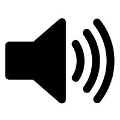

<!-- 	This Program is developed on jsPsych library by Lisa Sullivan
		Some elements were developed by Hyoung Seok Kwon & Na-Young Ryu -->
<!-- Development period: from Oct 26, 2017 to May, 2020 -->
<!-- library location: jspsych/ -->
<!-- PHP file: save_data.php -->
<!-- result file location and format: data/time_result.csv -->
<!-- jsPsych.currentTimelineNodeID bug: cann't get activeID when it is called in jsPsych.init.-->
<!-- Warning: if you provide an array that has very few valid permutations with no neighboring elements, 
     then this method will fail and cause the browser to hang. -->
<!-- AQ Reference: 	Baron-Cohen, S., Wheelwright, S., Skinner, R., Martin, J., & Clubley, 
					E. (2001). The autism-spectrum quotient (AQ): Evidence from asperger 
					syndrome/high-functioning autism, malesand females, scientists and 
					mathematicians. Journal of autism and developmental disorders, 31(1), 
					5-17.
-->

<!DOCTYPE html>
<html>

<head>
    <meta charset="UTF-8">
    <!-- Specify the title of your experiment here. This appears in the browser tab for the user -->
    <title>Listening test</title>
    <!-- 	this loads jquery and the main jspsych files. Do not remove (updates to more recent 
    		versions may cause issues)
    -->
    <script src="jquery/jquery-3.2.1.min.js"></script>
    <script src="jspsych/jspsych.js"></script>
    <!-- Load your plugins here -->
    <script src="jspsych/plugin-instructions.js"></script>
    <script src="jspsych/plugin-survey-text.js"></script>
    <script src="jspsych/plugin-survey-multi-choice.js"></script>
    <script src="jspsych/plugin-survey-likert.js"></script>
    <script src="jspsych/plugin-survey-html-form.js"></script>
    <script src="jspsych/plugin-survey-text.js"></script>
    <script src="jspsych/plugin-audio-keyboard-response.js"></script>
    <script src="jspsych/plugin-categorize-html.js"></script>
    <script src="jspsych/plugin-html-button-response.js"></script>
    <script src="jspsych/plugin-html-keyboard-response.js"></script>

    <!-- Loads the css file with the standard formatting -->
    <link href="jspsych/jspsych.css" rel="stylesheet" type="text/css">
    </link>

    <!-- Custom CSS to make the experiment look nice -->
    <style type="text/css">
        .jspsych-btn {
            margin: 15px;
        }

        .jspsych-content-wrapper {
            width: 80%;
        }

        .jspsych-content-wrapper p,
        h3,
        ol {
            text-align: left;
        }

        .jspsych-content-wrapper .btn_resp_p,
        .jspsych-content-wrapper label {
            text-align: left;
        }

        .jspsych-content-wrapper .jspsych-survey-multi-choice-horizontal .jspsych-survey-multi-choice-text {
            text-align: left;
            font-weight: bold;
        }

        .jspsych-content-wrapper .jspsych-survey-multi-choice-option .jspsych-survey-multi-choice-text {
            font-weight: normal;
        }

        .jspsych-survey-multi-choice-option input[type="radio"] {
            height: 20px;
            width: 20px;
            margin-bottom: 1em;
        }

        .jspsych-content-wrapper .jspsych-survey-text-question {
            text-align: left;
        }

        .jspsych-survey-multi-choice-option .jspsych-survey-multi-choice-text {
            font-weight: normal;
        }

        .jspsych-content {
            width: 100%;
        }

        .snd-btn {
            display: inline-block;
            padding: 6px 12px;
            margin: 4px;
            background: #fff;
            cursor: pointer;
            text-align: center;
            white-space: nowrap;
            vertical-align: middle;
            border: 1px solid transparent;
            border-radius: 4px;
            border-color: #ccc;
        }

        .snd-btn:hover {
            box-shadow: 0 0px 8px 0 rgba(0, 0, 0, 0.48), 0 0px 25px 0 rgba(0, 0, 0, 0.38);
        }

        .snd-btn:active {
            transform: translate(2px, 2px);
            box-shadow: 0 0px 8px 0 rgba(0, 0, 0, 0.24), 0 0px 25px 0 rgba(0, 0, 0, 0.19);
        }

        /* Modify height and width here to adjust the size of the buttons */
        .jspsych-html-button-response-button .jspsych-btn {
            font-size: 150%;
            width: 5em;
            height: 3em;
        }
    </style>

</head>

<body>


    <div id="jspsych-target">

    </div>

</body>


<script>
    /*********************************************************************************/
    /****************************** Global Variables *********************************/
    /*********************************************************************************/
    noOfCorrectPracticeToMoveOn = 7;
    inst = ''; // Variable for storing the instructions
    stimuliList = '';// Variable for storing the input data (csv)
    consent = '';// Variable for storing the consent
    exp_words = ['head']; // Variable for storing the input data (csv)
    noOfRepetitions = 4;
    participantID = '';
    practiceStimuliList = '';
    stimuliList = '';

    instructionsAfterPractice = '<h1>Formal Test</h1><p style="text-align: center;">The formal test starts from here.<br><span style="color: red;">You will need to rate how confident you are that the word you selected is correct.</span><br>If you have any question, please do not heasitate to ask.<br>The audio will only play once.<br>Please press the「Next」button to start.<\p>';
    practiceInstructions = '<h1>Practice</h1><br/><p style="text-align: center;">Let\'s start with some practice first!<br>Please press the「Next」button to start.<br><span style="color: red;">You will need to rate how confident you are that the word you selected is correct.</p>';
    question = '<h1>Which word did you hear?</h1>';
    question_continue = '<h1>Practice continues</h1>';
    buttonSwapText = '<p style="text-align: center;">The button positions will be swapped.<br>Please press the「Next」button to start.<br>Please feel free to take a break.</p>';
    buttonChangeText = '<p style="text-align: center;">The buttons will be changed.<br>Please press the「Next」button to start.<br>Please feel free to take a break.</p>';
    finishText = '<p style="text-align: center;">Here completes the test, thank you for your participation! </p><br/>';

    correctFeedbackText = '<span style="color:green;font-size:30px;">Correct</span>'
    incorrectFeedbackText = '<span style="color:red;font-size:30px;">The correct answer should be </p>'
    //incorrectFeedbackText2 = '<span style="color:red;font-size:30px;">です。</span>'

    noOfCorrectPractice = 0;

    /*********************************************************************************/
    /****************************** Reading file data ********************************/
    /*********************************************************************************/

    /** This reads in the text in fcnf_instructions.txt and stores it in a variable called
        'inst'.
    **/
    $.ajax({
        type: "GET",
        async: false,
        url: "configFiles/consent_1.txt",
        dataType: "text",
        success: function (txt) { inst = txtJSON(txt); }
    });


    // /** This reads in the data for the experiment from in word_stimuli.csv and stores it in 
    // 	a variable called 'stimuliList'.
    // **/
    $.ajax({
        type: "GET",
        async: false,
        url: "configFiles/expF0Stimuli.csv", //test.csv,
        dataType: "text",
        success: function (csv) { stimuliList = csvJSON(csv) }
    });
    // /** This reads in the data for the experiment from in practice_stimuli.csv and stores it in 
    // 	a variable called 'stimuliList'.
    // **/
    $.ajax({
        type: "GET",
        async: false,
        url: "configFiles/practiceStimuli.csv",
        dataType: "text",
        success: function (csv) { practiceStimuliList = csvJSON(csv) }
    });
    totalNumberPractice = practiceStimuliList.length;
    //practiceStimuliList.json = JSON.stringify(practiceStimuliList); //JSON

    /*********************************************************************************/
    /****************************** Initialising jsPsych *****************************/
    /*********************************************************************************/
    var jsPsych = initJsPsych({

        show_progress_bar: true,
        default_iti: 300,
        on_close: function () {
            var data = jsPsych.data.get();  // updates the data file with the most recent trial
            identificationData = jsPsych.data.get().filter([{ phase: "practice" }, { phase: "iden_exp" }]);  // only getting response phases
            identificationData = identificationData.ignore(['internal_node_id', 'trial_type']);  // ignoring internal node id
            //identificationData = identificationData.ignore('trial_type');  // ignoring trial_type
            identificationData.localSave('csv', 'pitchAccentPilot_responses_onCLose_' + participantID + '.csv'); //save locally
        },
        on_finish: function (data) {
            data = jsPsych.data.get();  // updates the data file with the most recent trial
            identificationData = jsPsych.data.get().filter([{ phase: "practice" }, { phase: "iden_exp" }]);  // only getting response phases
            identificationData = identificationData.ignore(['internal_node_id', 'trial_type']);  // ignoring internal node id
            //identificationData = identificationData.ignore('trial_type');  // ignoring trial_type
            identificationData.localSave('csv', 'pitchAccentPilot_responses_' + participantID + '.csv'); //save locally

            finish(); //prints the message you saved in the finish() function above
        }


    });

    //participantID = jsPsych.randomization.randomID(8);


    /*********************************************************************************/
    /******************************** Enter participant No **********************************/
    /*********************************************************************************/

    var participantID_block = {
        type: jsPsychSurveyText,
        //preamble: "<h1>Participation ID</h1>",
        questions: [{ prompt: "<p>Participation ID </p>", rows: 1, columns: 80 }],
        button_label: "Next",
        on_finish: function (data) {
            jsPsych.data.addProperties({ participantID: data.response.Q0 });
            participantID = data.response.Q0;
        }
    };


    /**********************************************************************************/
    /******************** Define sound check/activation block *************************/
    /**********************************************************************************/

    /** Sound Check: This allows the participant to check that their sound is working & is at 
        an appropriate volume
        It also makes the experiment work in Google Chrome and other web browsers that don't 
        allow auto-loading of sound without the user manually playing the sound first
    **/
    // var sound_test = {
    //     	type: jsPsychInstructions, 
    //     	pages: [ '<audio id="testAudio"><source src="sound/tone200Hz_82dB_plus6dBFromMeanSegment.wav" type="audio/wav"></audio><h1>Sound Test</h1><p style="text-align: center;">Please test your sound by clicking the button below. You may click it multiple times to adjust your volume so you can hear it clearly.</p><button onclick="playSound()" type="button" class="snd-btn"></button>' ], 
    //     	show_clickable_nav: true,
    //     	button_label: "Next",
    // };

    /*************************************************************************************/
    /******************************** Instruction block **********************************/
    /*************************************************************************************/

    /**	Loads the instructions
        To modify instructions, modify fcnf_instructions.txt using full HTML (including <p>
        tags)
        Push this block to the timeline below
    **/
    var instructions_block = {
        type: jsPsychInstructions,
        pages: [inst],
        show_clickable_nav: true
    };

    var instructionsAfterPractice_block = {
        type: jsPsychInstructions,
        pages: [instructionsAfterPractice],
        button_label_next: "Next",
        show_clickable_nav: true
    }

    // var instructionsBeforeSurvey_block = {
    //     type: jsPsychInstructions, 
    //     pages: [instructionsBeforeSurvey ],
    //     button_label_next: "Next",
    //     show_clickable_nav: true
    // }


    /*********************************************************************************/
    /*************************** Define experiment block *******************************/
    /*********************************************************************************/


    /** This creates the variable that all the trials will be stored in. To run the task,
        push this to the timeline
    **/
    var exp_block = [];
    var totalSet = exp_words.length; //defined at the beginning
    /** This creates the main task. It loops through each item in exp_stimuli creating an
        audio event to play each sound, followed by a 2 alternative forced choice
        question in which the participants indicate which word they heard
    	
        trial_duration determines the time from the onset of the audio until the
        identification task is presented to the listener
    
        3 loops: randomise within 10-step continuum, swapping button locations, randomise of number of keywords - if needed
    **/
    var exp_instructions = {
        type: jsPsychInstructions,
        pages: [question],
        show_clickable_nav: true,
        button_label: "Next",
    };

    for (var j = 0; j < noOfRepetitions; j++) {
        block = j + 1;
        exp_stimuli = jsPsych.randomization.shuffle(stimuliList); //stimuliList is from csv

        for (var k = 0; k < exp_stimuli.length; k++) {
            currentStimulus = exp_stimuli[k];

            const buttonChoices = (j % 2 === 0)
                ? [currentStimulus.textOption_0, currentStimulus.textOption_1, currentStimulus.textOption_2, currentStimulus.textOption_3]
                : [currentStimulus.textOption_1, currentStimulus.textOption_0, currentStimulus.textOption_3, currentStimulus.textOption_2];

            //	Plays the sound
            exp_block.push(
                {
                    type: jsPsychAudioKeyboardResponse,
                    stimulus: 'sound/' + currentStimulus.sound + '.wav',
                    prompt: '',
                    choices: "NO_KEYS",
                    trial_duration: 1500,
                });

            // Button Response Block
            exp_block.push({
                type: jsPsychHtmlKeyboardResponse, // Custom trial to include slider and buttons
                stimulus: function () {
                    return `
                        <div>
                            ${question}
                            <div id="button-container" style="margin-top: 20px; text-align: center;">
                                ${buttonChoices.map((choice, idx) =>
                        `<button class="response-button jspsych-btn" id="button-${idx}" data-choice="${idx}" style="margin: 10px;
                                                                                                                    padding: 20px 40px;
                                                                                                                    font-size: 22px;
                                                                                                                    border: 1px solid #ccc;
                                                                                                                    border-radius: 8px;
                                                                                                                    background-color: #ffffff;"> 
                                        ${choice}
                                    </button>`
                    ).join("")}
                            </div>
                            <div style="margin: 20px auto; width: 500px;">
                                <p style="text-align: center;margin-bottom: 10px; font-size: 18px; font-weight: bold;">How confident are you that the word you selected is correct?</p>
                                <input type="range" id="confidence-slider" min="1" max="10" value="5" step="1" 
                                    style="width: 100%;">
                                <div style="display: flex; justify-content: space-between; margin-top: 5px;">
                                    <span>1</span><span>2</span><span>3</span><span>4</span>
                                    <span>5</span><span>6</span><span>7</span><span>8</span>
                                    <span>9</span><span>10</span>
                                </div>
                                <div style="display: flex; justify-content: space-between; margin-top: 5px;">
                                    <span style="text-align: left; color: #666;">Not confident at all</span>
                                    <span style="text-align: right; color: #666;">Very confident</span>
                                </div>
                            </div>
                            <div style="margin-top: 20px; text-align: right;">
                                <button id="next-button" class="jspsych-btn" disabled>Next</button>
                            </div>
                        </div>
                    `;
                },
                choices: "NO_KEYS", // Disable automatic keyboard navigation
                data: {
                    phase: 'iden_exp',
                    word: currentStimulus.word,
                    noise: currentStimulus.noise,
                    block: block,
                    F0step: currentStimulus.F0step,
                    buttonChoices: buttonChoices,
                    sound: currentStimulus.sound,
                },
                on_load: function () {
                    let selectedAnswer = null;
                    const nextButton = document.getElementById("next-button");
                    const slider = document.getElementById("confidence-slider");
                    const responseButtons = document.querySelectorAll(".response-button");
                    const correctAnswer = this.data.word;
                    // Add event listener to response buttons
                    responseButtons.forEach(button => {
                        button.addEventListener("click", function () {
                            selectedAnswer = button.dataset.choice; // Get selected button index
                            responseButtons.forEach(btn => {
                                btn.classList.remove("selected"); // Remove selected class from other buttons
                                btn.style.backgroundColor = "#ffffff"; // Reset background to white
                            });
                            button.classList.add("selected"); // Add selected class
                            button.style.backgroundColor = "#d9d9d9"; // Change background to grey for selected button
                            checkReadyToProceed();
                        });
                    });


                    function checkReadyToProceed() {
                        if (selectedAnswer !== null) {
                            nextButton.disabled = false; // Enable Next button
                        }
                    }

                    // Add event listener to the "Next" button
                    nextButton.addEventListener("click", function () {
                        const sliderValue = parseInt(slider.value);
                        const answer = buttonChoices[selectedAnswer];

                        console.log("Answer:", answer);

                        jsPsych.finishTrial({
                            answer: answer,
                            sliderValue: sliderValue,
                            accuracy: answer === correctAnswer ? 1 : 0,
                        });
                    });
                }
            });
        }
        // Swap button for each set
        if (j < noOfRepetitions - 1) {
            exp_block.push({
                type: jsPsychInstructions,
                pages: [buttonSwapText],
                show_clickable_nav: true,
                button_label: "Next",
            });
        }
    }


    /*********************************************************************************/
    /*************************** Define practice block *******************************/
    /*********************************************************************************/
    var practice_block = [];
    var practice_instructions = {
        type: jsPsychInstructions,
        pages: [practiceInstructions],
        show_clickable_nav: true,
        button_label: "Next",
    };

    var practice_sound = {
        type: jsPsychAudioKeyboardResponse,
        stimulus: () => `sound/${jsPsych.timelineVariable('sound')}.wav`,
        prompt: '',
        choices: "NO_KEYS",
        trial_duration: 1500
    };

    var practice_question = {
        type: jsPsychHtmlKeyboardResponse,
        stimulus: function () {
            // Define button choices dynamically from timeline variables
            const choices = [
                jsPsych.timelineVariable('textOption_0'),
                jsPsych.timelineVariable('textOption_1'),
                jsPsych.timelineVariable('textOption_2'),
                jsPsych.timelineVariable('textOption_3'),
                jsPsych.timelineVariable('textOption_4'),
                jsPsych.timelineVariable('textOption_5'),
                jsPsych.timelineVariable('textOption_6'),
                jsPsych.timelineVariable('textOption_7')
            ];

            // Store button choices in trial data for consistent reference
            jsPsych.data.addProperties({
                practiceChoices: choices,
                correctWord: jsPsych.timelineVariable('word')  // Add this line
            });

            return `
                <div>
                    ${question}
                    <div id="button-container" style="margin-top: 20px; text-align: center;">
                        ${choices.map((choice, idx) =>
                `<button class="response-button jspsych-btn" id="button-${idx}" data-choice="${idx}" 
                                style="margin: 10px; padding: 20px 40px; font-size: 22px; 
                                       border: 1px solid #ccc; border-radius: 8px; background-color: #ffffff;"> 
                                ${choice}
                            </button>`
            ).join("")}
                    </div>
                    <div style="margin: 20px auto; width: 500px;">
                        <p style="text-align: center;margin-bottom: 10px; font-size: 18px; font-weight: bold;">
                            How confident are you that the word you selected is correct?
                        </p>
                        <input type="range" id="confidence-slider" min="1" max="10" value="5" step="1" style="width: 100%;"/>
                        <div style="display: flex; justify-content: space-between; margin-top: 5px;">
                            <span>1</span><span>2</span><span>3</span><span>4</span>
                            <span>5</span><span>6</span><span>7</span><span>8</span>
                            <span>9</span><span>10</span>
                        </div>
                        <div style="display: flex; justify-content: space-between; margin-top: 5px;">
                            <span style="text-align: left; color: #666;">Not confident at all</span>
                            <span style="text-align: right; color: #666;">Very confident</span>
                        </div>
                    </div>
                    <div style="margin-top: 20px; text-align: right;">
                        <button id="next-button" class="jspsych-btn" disabled>Next</button>
                    </div>
                </div>
            `;
        },
        choices: "NO_KEYS", // Disable automatic keyboard navigation
        data: {
            phase: 'practice',
            word: jsPsych.timelineVariable('word'),
            correctAnswer: jsPsych.timelineVariable('word'),
            noise: jsPsych.timelineVariable('noise'),
            block: "practice",
            F0step: jsPsych.timelineVariable('F0step'),
            sound: jsPsych.timelineVariable('sound'),
        },
        on_load: function () {
            let selectedAnswer = null;
            const nextButton = document.getElementById("next-button");
            const slider = document.getElementById("confidence-slider");
            const responseButtons = document.querySelectorAll(".response-button");

            // Fetch buttonChoices and correct word from trial data
            const lastTrialData = jsPsych.data.get().last(1).values()[0];
            const practiceChoices = lastTrialData.practiceChoices;
            const correctWord = lastTrialData.correctWord;

            // Add event listener to response buttons
            responseButtons.forEach(button => {
                button.addEventListener("click", function () {
                    selectedAnswer = button.dataset.choice;
                    responseButtons.forEach(btn => {
                        btn.classList.remove("selected");
                        btn.style.backgroundColor = "#ffffff";
                    });
                    button.classList.add("selected");
                    button.style.backgroundColor = "#d9d9d9";
                    checkReadyToProceed();
                });
            });

            function checkReadyToProceed() {
                if (selectedAnswer !== null) {
                    nextButton.disabled = false;
                }
            }

            // Add event listener to the "Next" button
            nextButton.addEventListener("click", function () {
                const sliderValue_practice = parseInt(slider.value);
                const answer_practice = practiceChoices[selectedAnswer];

                var accuracy = answer_practice === correctWord ? 1 : 0;
                if (accuracy === 1) {
                    noOfCorrectPractice++;
                    console.log("noOfCorrectPractice", noOfCorrectPractice);
                }

                jsPsych.finishTrial({
                    selectedAnswer: answer_practice,
                    sliderValue: sliderValue_practice,
                    correctAnswer: correctWord,
                    accuracy: accuracy
                });
            });
        }
    };


    var practice_feedback = {
        type: jsPsychHtmlKeyboardResponse,
        stimulus: function () {
            const lastTrialData = jsPsych.data.getLastTrialData().values()[0];
            console.log("Last trial data:", lastTrialData);
            const correctAnswer = lastTrialData.correctAnswer;
            const accuracy = lastTrialData.accuracy;

            if (accuracy === 1) {
                return '<span style="color:green;font-size:30px;">Correct</span>';
            } else {
                return `<span style="color:red;font-size:30px;">Incorrect. The correct answer is <b>${correctAnswer}</b>.</span>`;
            }
        },
        choices: "NO_KEYS",
        trial_duration: 1000
    };


    var if_continue = {
        type: jsPsychHtmlButtonResponse,
        stimulus: question_continue,
        choices: ["Repeat", "Continue"]
    }

    var prac_procedure_1 = {
        timeline: [practice_sound, practice_question, practice_feedback],
        timeline_variables: practiceStimuliList.slice(0, 8),
        randomize_order: true
    };
    var prac_procedure_2 = {
        timeline: [practice_sound, practice_question, practice_feedback],
        timeline_variables: practiceStimuliList.slice(4, 8),
        randomize_order: true
    };

    var practice_set = {
        timeline: [prac_procedure_1],
        randomize_order: false
    };


    var correctLoop_node = {
        timeline: [prac_procedure_1],
        loop_function: function () {
            if (noOfCorrectPractice < noOfCorrectPracticeToMoveOn) {
                noOfCorrectPractice = 0;
                console.log("repeat")
                return true;
            }
            else {
                return false;
            }
        }
    }


    var evaluate_if_continue = {
        timeline: [practice_set],
        loop_function: function () {
            // get the data from the previous trial,
            // and check which key was pressed
            var data = jsPsych.data.get().last(1).values()[0];
            if (data.response == 1) {
                return false;
            } else {
                return true;
            }
        }
    }

    practice_block.push(practice_instructions);

    practice_block.push(correctLoop_node);

    /*********************************************************************************/
    /*************************** Volume adjustment block *****************************/
    /*********************************************************************************/
    var volume_adjustment_block = {
        type: jsPsychInstructions,
        pages: [
            `<h1>Volume Adjustment</h1>
             <p>Please adjust your device volume so that you can hear the sound clearly.</p>
             <p>You can play the audio as many times as needed by clicking the "Play Audio" button below.</p>
             <button id="play-audio-button" class="snd-btn">Play Audio</button>
             <audio id="volume-audio" src="sound/HARD_-6.wav"></audio>
             <p>When you are ready, click the "Next" button to proceed.</p>`
        ],
        show_clickable_nav: true,
        button_label_next: "Next",
        on_load: function () {
            const playButton = document.getElementById('play-audio-button');
            const audioElement = document.getElementById('volume-audio');

            // Add event listener to play button
            playButton.addEventListener('click', () => {
                audioElement.play();
            });
        }
    };

    /*********************************************************************************/
    /************************** User defined functions *******************************/
    /*********************************************************************************/

    /**	This reads .txt  files and stores them in a variable **/
    function txtJSON(txt) {
        var text = '';
        var lines = txt.split('\n');
        for (var i = 0; i < lines.length; i++) {
            text = text + lines[i];
        }
        return text;
    };

    /**	This reads .csv  files and stores them in a variable **/
    //var csv is the CSV file with headers
    function csvJSON(csv) {
        var lines = csv.split(/\r\n|\n/);
        var result = [];
        var headers = lines[0].split(',');
        var headers = lines[0].split(',');
        var headers = lines[0].split(',');
        // TODO should check for empty lines at end
        for (var i = 1; i < (lines.length); i++) {
            var obj = {};
            var currentline = lines[i].split(',');
            for (var j = 0; j < headers.length; j++) {
                obj[headers[j]] = currentline[j];
            }
            result.push(obj);
        }
        return result; //JavaScript object
        //return JSON.stringify(result); //JSON
    };


    /* save data function */

    function saveData(filename, filedata) {
        $.ajax({
            type: 'post',
            cache: false,
            url: 'save_data.php', // this is the path to the above PHP script 
            data: { filename: filename, filedata: filedata }
        });
    };

    /**	This function plays the sound in the sound check **/
    function playSound() {
        var x = document.getElementById("testAudio");
        x.play();
    }


    /* time stamp function, format YYYYMMDDhhmmss*/
    function stamp() {
        var dt = new Date();
        var year = dt.getFullYear();
        var month = ((dt.getMonth() + 1) < 10 ? '0' : '') + (dt.getMonth() + 1);
        var day = (dt.getDate() < 10 ? '0' : '') + dt.getDate();
        var hour = (dt.getHours() < 10 ? '0' : '') + dt.getHours();
        var minute = (dt.getMinutes() < 10 ? '0' : '') + dt.getMinutes();
        var second = (dt.getSeconds() < 10 ? '0' : '') + dt.getSeconds();
        var stamp = year + '' + month + '' + day + '' + hour + '' + minute + '' + second;
        return stamp;
    };

    /** This function is called when the experiment finishes. Add a thank you message, 
        debriefing or direct participants somewhere else (e.g. back to prolific or mturk) 
        \
    **/
    function finish() {
        DOM_target = document.querySelector('#jspsych-content');
        DOM_target.innerHTML = finishText;
        jsPsych.pluginAPI.cancelAllKeyboardResponses();
        jsPsych.pluginAPI.clearAllTimeouts();
    };

    // shuffle the button order
    function shuffleArray(array) {
        let shuffledArray = array.slice();  // Create a copy of the original array to avoid modifying it
        for (let i = shuffledArray.length - 1; i > 0; i--) {
            // Generate a random index from 0 to i
            const j = Math.floor(Math.random() * (i + 1));
            // Swap elements at indices i and j
            [shuffledArray[i], shuffledArray[j]] = [shuffledArray[j], shuffledArray[i]];
        }
        return shuffledArray;
    }

    /*********************************************************************************/
    /******************** Make timeline like flow in Psychopy ************************/
    /*********************************************************************************/

    /** This creates a variable for the timeline **/
    var timeline = [];

    /**	List your blocks here in the order you want them to appear
        follow the same format as for the current blocks.
    **/

    //timeline = timeline.concat(sound_test);
    timeline = timeline.concat(participantID_block);
    timeline = timeline.concat(instructions_block);
    timeline = timeline.concat(volume_adjustment_block);
    timeline = timeline.concat(practice_block);
    timeline = timeline.concat(instructionsAfterPractice_block);
    timeline = timeline.concat(exp_block);
    //timeline = timeline.concat(instructionsBeforeSurvey_block);

    /*********************************************************************************/
    /******************************** Run jsPsych ************************************/
    /*********************************************************************************/

    /** This code initiates the experiment and specifies what happens
            - After each trial (on_data_update)
            - At the end of the experiment
    **/


    jsPsych.run(timeline);
    //jsPsych.simulate(timeline);

</script>

</html>